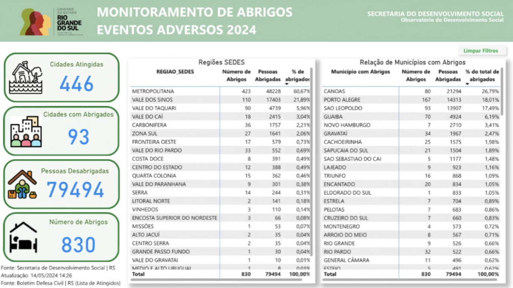

EMERGÊNCIA
AÇÕES IMEDIATAS
Siga os passos abaixo se você está numa área inundada
-
Se puder, permaneça em casa.
-
Evite atravessar as águas de carro ou a pé.
-
Evite o deslocamento para regiões afetadas.
-
Desconecte aparelhos elétricos para evitar choques.
-
Se morar em área de risco, abandone o local com antecedência.
-
Se ficar isolado em local inseguro, chame imediatamente o Corpo de Bombeiros (193).
-
Siga as instruções das autoridades locais e utilize as rotas de evacuação recomendadas.
-
Esteja atento aos boletins meteorológicos e alertas de emergência emitidos pelo Estado.
ABRIGOS TEMPORÁRIOS
Localização de abrigos temporários
Plataforma com dados sobre abrigos temporários:
Clique aqui
PDF com lista de abrigos cadastrados:
Clique aqui

CONTATOS DE EMERGÊNCIA 
Números de telefone de emergências locais
- Defesa Civil 199
- Polícia Militar 190
- Corpo de Bombeiros 193